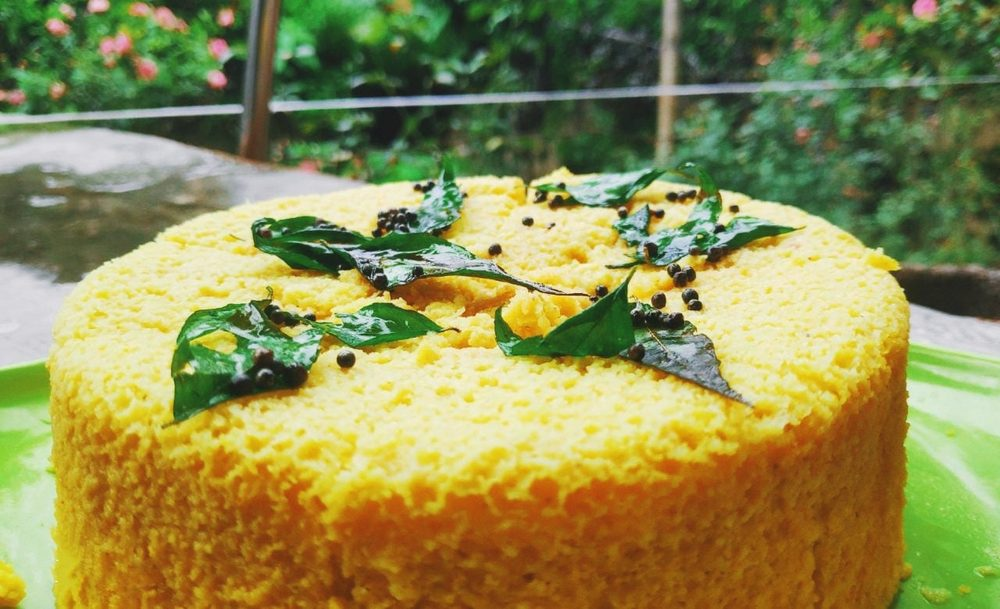

Contains: sesame, mustard
Checked against the ingredient list for ten allergens: milk, egg, fish, crustaceans, tree nuts, peanuts, sesame, mustard, soy and gluten. Brands vary, so read the label on anything new to you.
Ingredients
Quantities for 4.
- 200g, sifted Besancoarse besan gives a better crumb than fine
- 160ml for the batter, plus 120ml for the tempering Water
- 5 tbsp: 1 into the batter, 4 into the tempering water Sugar
- 1 tbsp juice Lemon
- 4: 2 ground into the batter, 2 slit for the tempering Green Chilli
- 1 tbsp, grated Ginger
- 1/4 tsp Turmericjust for colour, no more
- 1 tsp Salt
- 1.5 tsp (one 5g sachet) Enothe only lift there is, add last
- 5 tbsp: 2 into the batter, 3 for the tempering Neutral Oil
- 1 tsp Mustard Seeds
- 1 tsp Sesame
- 1/4 tsp Asafoetidause compounded-free hing to keep this gluten-free
- 10 Curry Leaves
- 3 tbsp, chopped Coriander Leavesoptional
- 2 tbsp, freshly grated Coconutoptional
Cookware
steamer, stovetop
Before you start
- Grease a 20cm tin and get the steamer water to a rolling boil before you mix the batter. Once eno goes in the batter will not wait.
- Grind the ginger with 2 of the green chillies into a coarse paste; the other 2 chillies stay whole for the tempering.
- Rest the batter 15 minutes so the besan hydrates. This is what stops the khaman tasting raw.
Method
- Whisk the besan with 160ml water, 1 tbsp sugar, the ginger-chilli paste, turmeric, salt, 2 tbsp oil and the lemon juice into a smooth batter the thickness of pancake batter. Rest 15 minutes.Whisk in one direction and break every lump now. You cannot fix them later.
- Bring the steamer to a hard boil and oil the tin.
- Stir the eno into the batter with a teaspoon of water, whisk hard for 10 seconds until it froths and doubles, and pour straight into the tin.Do not beat it down after it froths. Pour and steam immediately.
- Steam covered on high for 15-18 minutes, until a skewer pushed into the centre comes out clean and the top springs back.
- Lift out, rest 5 minutes, then cut into 4cm diamonds and loosen them in the tin.
- Heat the remaining 3 tbsp oil, crackle the mustard seeds, then add the sesame, asafoetida, curry leaves and slit chillies. Stand back, the leaves spit.
- Pour in 120ml water and 4 tbsp sugar, bring to a boil and cook 1 minute until the sugar dissolves.This watery syrup looks wrong. It is right. It is what makes khaman moist rather than dry.
- Spoon the hot tempering evenly over the cut khaman, tipping the tin so it reaches the corners. Leave 10 minutes to drink it in.
- Scatter with coriander and grated coconut and serve warm with green chutney.
Storage
Best the day it is made. Keeps 2 days covered in the fridge; steam the pieces 3-4 minutes to bring the sponge back, never microwave them dry.
Nutrition Low estimate
Medium protein: 12 g a serving, 11% of the calories
| Per serving121 g | Per 100 g | |
|---|---|---|
| Calories | 462 kcal | 381 kcal |
| Protein | 12.3 g | 10 g |
| Carbohydrate | 51.3 g | 42 g |
| of which sugars | 25.1 g | 21 g |
| Fibre | 6.9 g | 6 g |
| Fat | 23.8 g | 20 g |
| of which saturated | 4.4 g | 4 g |
| of which unsaturated | 17.6 g | 14 g |
Syrup left in the bowl, or batter that yields more than the stated servings, means the real figures are likely lower. Nearest database match used for asafoetida, curry leaves. Estimated from raw ingredients using USDA FoodData Central.
Times, yields, allergens and nutrition are guidance. Use your own judgement on doneness and on storing. More in About.